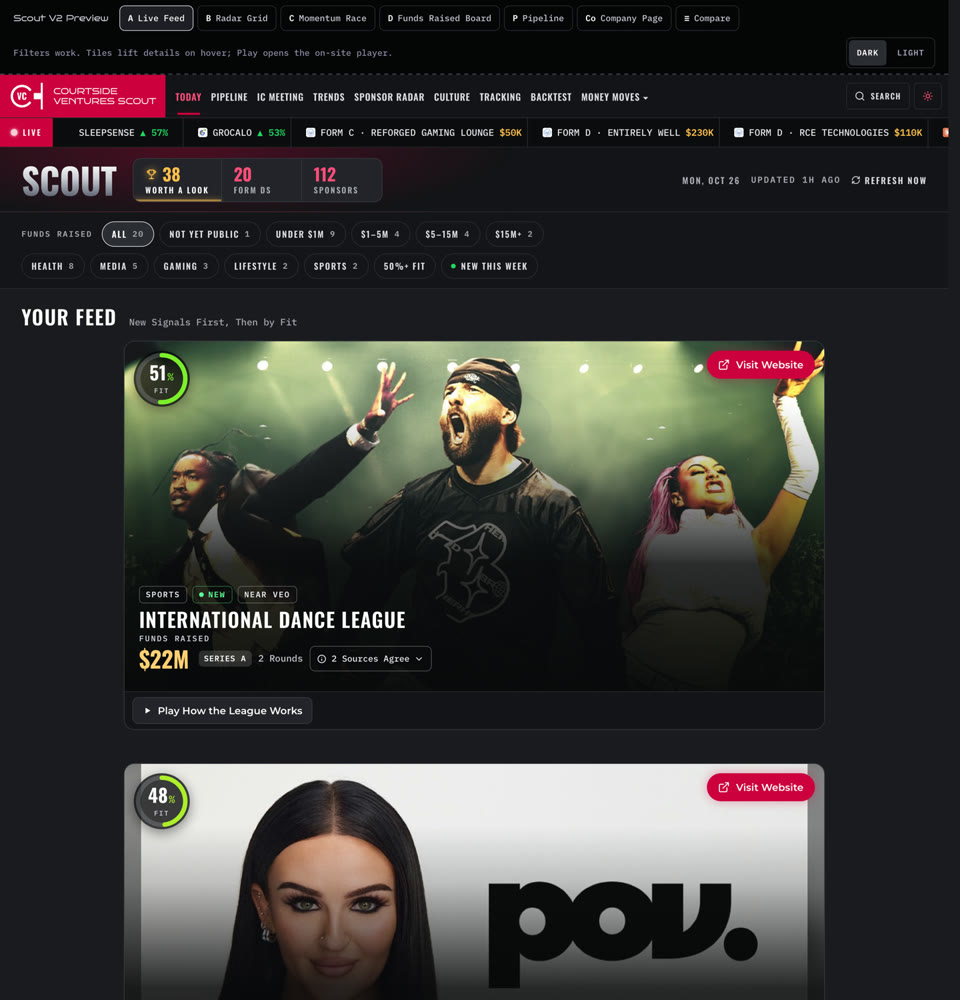

Open the Full PageScout V2: Full Pages
Every page uses the live site's real header, ticker, masthead and footer, with the round 1 picks inside: Tile cards on Today and the Pipeline, the Deal Sheet on the company page. Real companies and numbers from Scout's database (10-26-26). Pick one of the four Today designs.